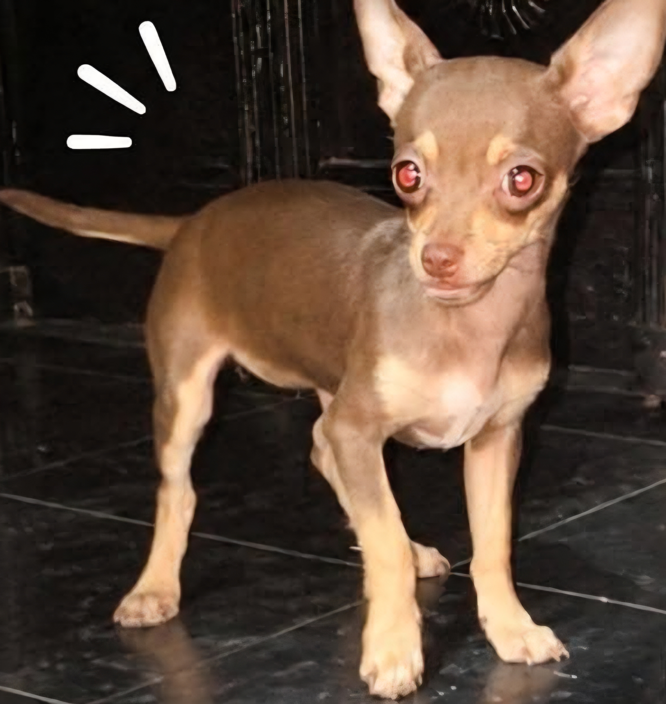
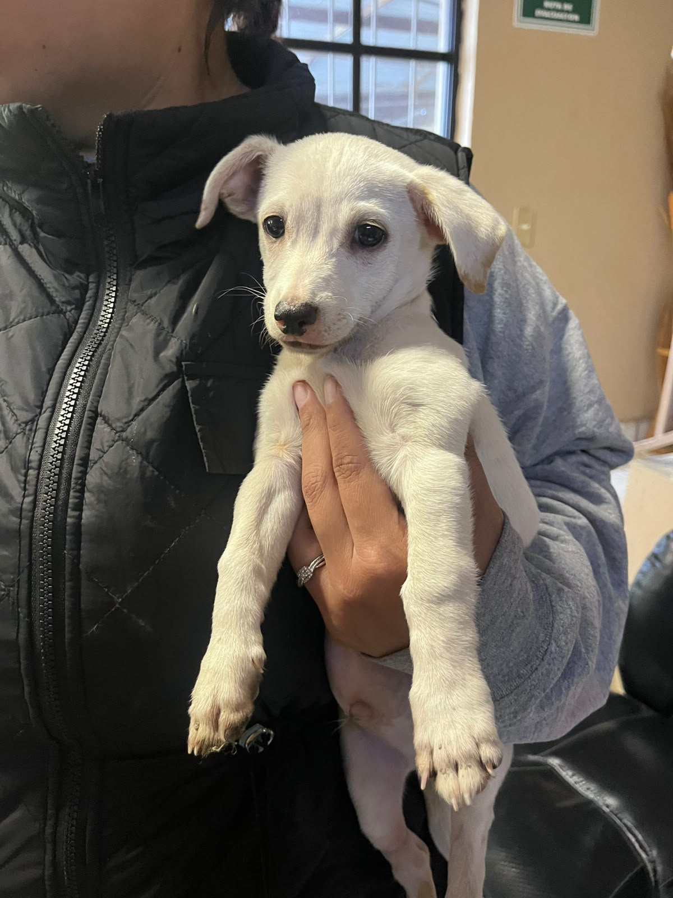
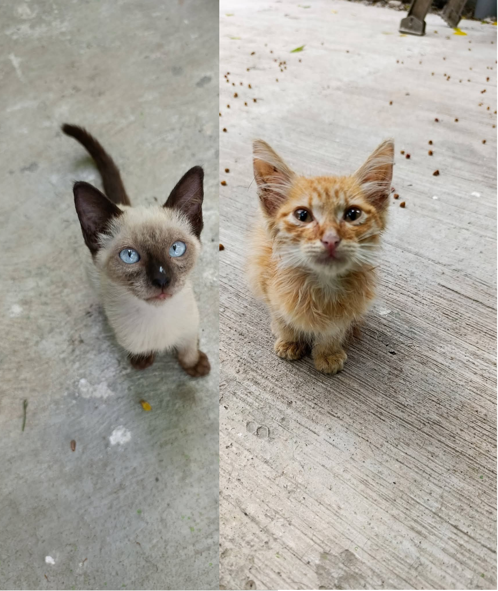

Si tienes información sobre sus dueños, comunícate con nuestro club.
🔍 Mascota Perdida
Nombre: Kámala
Raza: Desconocida
Última ubicación: Col. Chapultepec
Fecha: 17 de noviembre de 2026
Si tienes información sobre el paradero de la mascota, comunícate con nuestro club.
🔍 Mascota Perdida

Nombre: Baby
Raza: Desconocida
Última ubicación: Col. 24 de Agosto
Fecha: ultima semana
Si tienes información sobre el paradero de la mascota, comunícate a 8781118964.
Se ofrece recompensa.
🔍 Mascota Perdida
Nombre: Lulu
Raza: Desconocida
Última ubicación: Villas del Carmen
Fecha: 14 de Noviembre del 2026
Si tienes información sobre el paradero de la mascota, comunícate a 8781157687.
(No llevaba el sueter rosa que se ve en la foto)
❤️ Recaudación para Canelito
Canelito fue adoptado con signos de maltrato y necesita dinero para sus tratamientos médicos. Ayúdanos a recaudar fondos para su recuperación.
Escribir al 8781081880 para más información.
Meta: $5,000 MXN
Recaudado: $500 MXN
20%
🏡 Adopción Responsable

Nombre: [desconocido]
Edad: [desconocida]
Personalidad: tranquilo
Perrito macho en adopcion, lo tienen en resguardo, se encontraba solito en la calle.
Mas informacion al +52 878 700 0012
🏡 Adopción Responsable
Nombre: [desconocido]
Edad: 2 meses
Personalidad: muy cariñosos
Mas informacion al 878 153 8212
🏡 Adopción Responsable

Nombre: [desconocido]
Edad: meses
Raza: naranja esponjado y Siames
Personalidad: muy lindo y cariñoso
El gatito naranja solo esta mal peinado, pero es muy lindo y cariñoso, se deja agarrar y cargar.
Mas informacion al 878 153 8212
🏡 Adopción Responsable
Nombre: Duquesa
Edad: 5 meses
Personalidad: cariñosa y juguetona,
Es sorda, tiene heterocromia, hace caso con señas, usa el arenero y no come otros alimentos mas que un alimento de la Farmacia Guadalajara que se llama "FORTI CAT", es el unico que no le da Diarreis.
Interesa en adoptar a Duquesa? Contacta al 993 256 4086